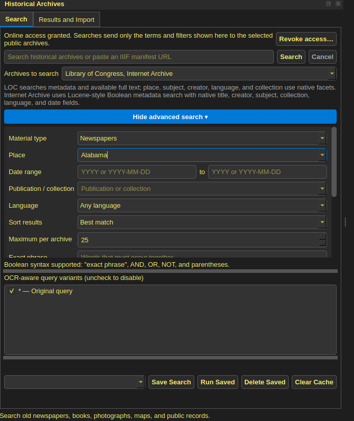
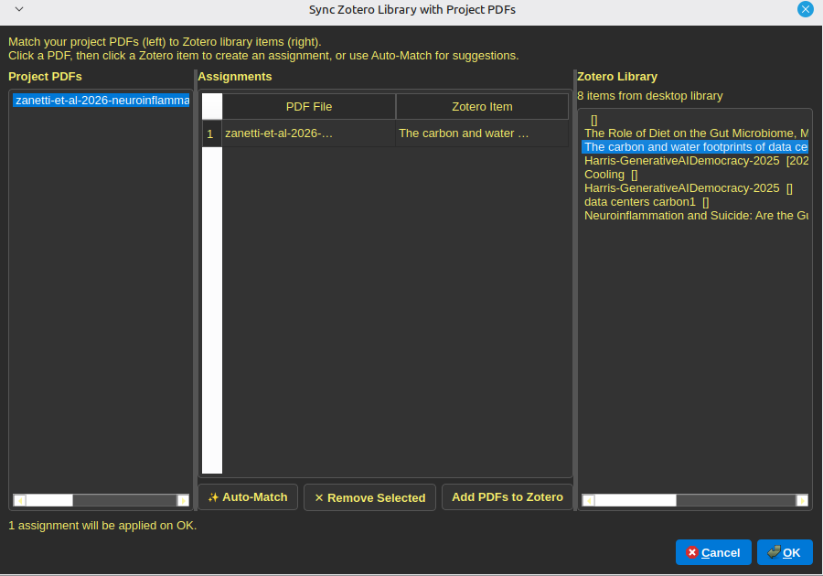
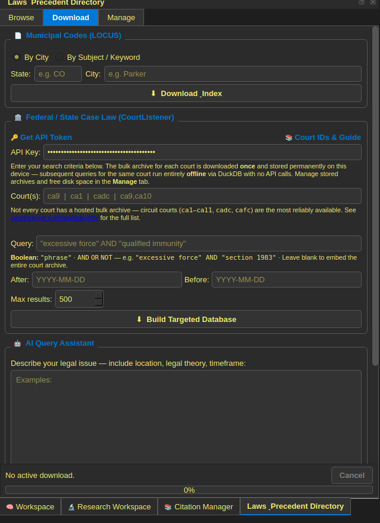
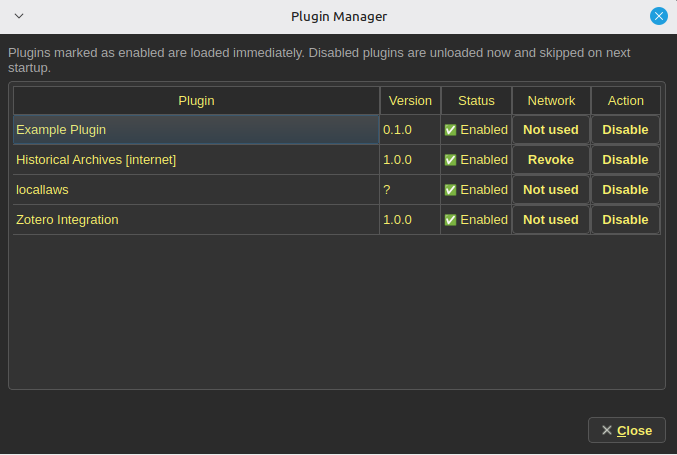
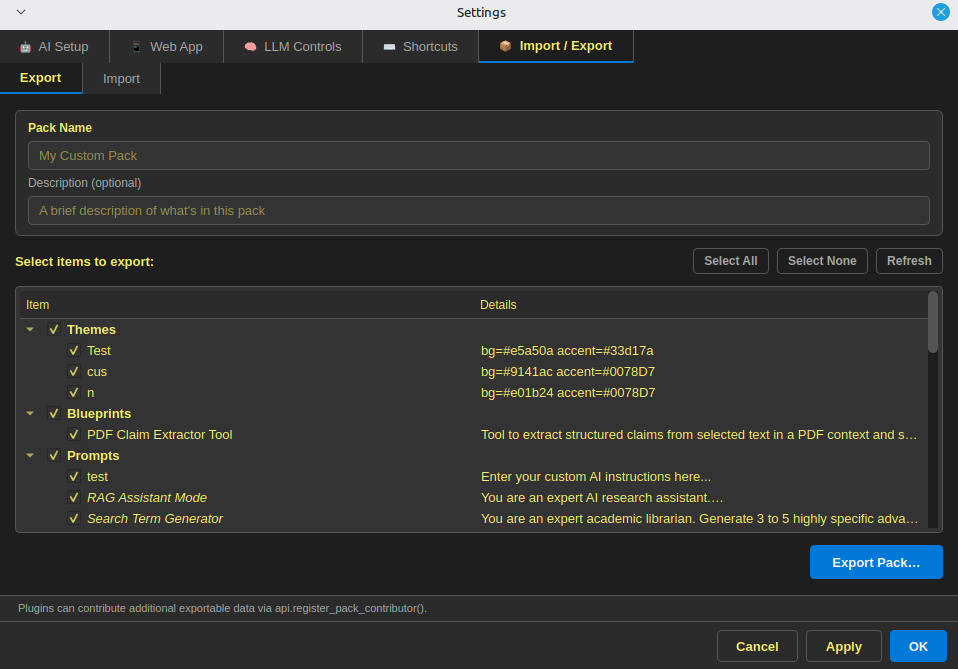

Plugins & Extensions
Papyrus is designed to be extendible so it can be used in a variety of fields
Why extensions exist
Research fields differ in sources, metadata, terminology, and retrieval habits. Extensions provide a place for field-specific importers, panels, commands, and project data.
Historical Archives
This plugin allows a researcher to directly query various APIs (like the Library of Congress) for historical records such as newspapers. It supports keyword search, date filtering, and boolean searching, allowing a researcher to quickly find and pull relevant historical material into their project without ever leaving the app.
{kind=link}

Zotero
This plugin allows connecting the citation dock to your Zotero library, improving the quality of the citations provided. If information is missing from the citation dock for a particular source, you can sync that source with Zotero to get the missing information and a more accurate citation.
{kind=link}

Local Laws & Precedent
This plugin allows querying various APIs (such as Court Listener) to pull legal precedents and judicial decisions, using keyword and boolean search, as well as having a filter for jurisdiction and time period. This allows a researcher to quickly find relevant precedent without leaving the app.
{kind=link}

Permissions and limitations
The documented loader can declare capabilities, enable or disable an extension, and route supported actions through a public API. Those conventions improve reviewability but are not, by themselves, a security sandbox. A malicious or flawed extension may be able to use facilities outside the documented facade. Network enforcement, cleanup, background work, and side effects need testing.
{kind=link}

Packs
A pack is intended to bundle reusable configuration such as analysis templates, workflows, dictionaries, or extension settings. Imported content still needs validation, version compatibility, and a clear account of changes.
{kind=link}
